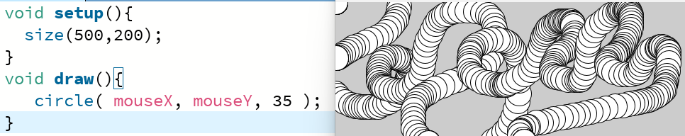
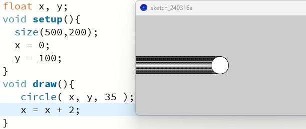
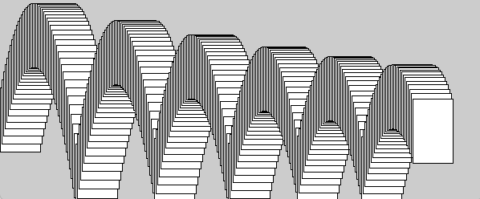
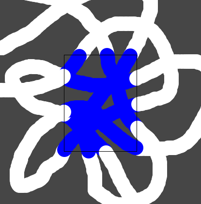
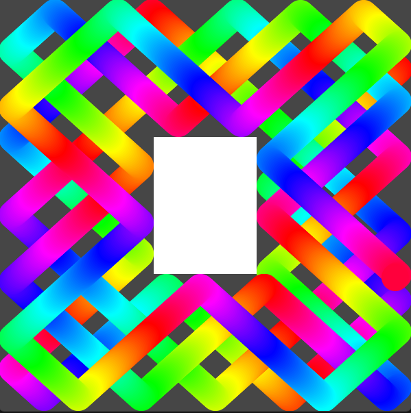

Computação Gráfica 2D: Lista de Exercícios
Desenhando com código
Modo Dinâmico
Variáveis
Condicionais
Expressões Booleanas
Loops
Teclado
Arrays
- Refaça a sketch da bolinha quicando nas paredes ("dvd") com 100 bolinhas, transformando as variáveis daquele programa em arrays.
* dvd_com_arrays.pde - partindo de "arrays_intermediario.pde", desenhe uma linha contínua que passa conectando todas as bolinhas.
- Usando "bolinhas_arrastaveis.pde" como base, crie caixinhas no canvas que detectam quantas bolinhas foram colocadas dentro delas e mostram esse número na tela com text().
Familiarize-se com as funções de desenho do Processing, e com o canvas.
Conheça mais delas e confira a sintaxe na Referência.
Código: formas.pde, smiley.pde.
Desafio: Tente realizar um desenho simples. Uma casinha, uma arvore, um rosto.
Hora de colocar os desenhos em movimento!
Código: modo_dinamico.pde
Desafio: use a função background() para desabilitar o "rastro" da bolinha.
As variáveis pmouseX e pmouseY guardam a posição do mouse no frame anterior. Use-as para criar um pincel que desenha linhas continuas sob o mouse. (ao contrário do exemplo, onde podemos ver a bolinha de cada frame individualmente)
Para que o computador crie animações de forma autônoma, sem nós usarmos o mouse, por exemplo, precisamos instruí-lo a usar sua memória. Variáveis são as "caixinhas de dados" que seguram os números e outras informações enquanto o programa executa.
Código: variaveis.pde
Desafio: Faça a bolinha andar na diagonal. Faça ela andar mais rápido, mais devagar. Faça a bolinha mudar de cor a medida que anda.
O if e o else são as palavras-chave que nos permitem executar um certo bloco de código condicionalmente.
Código: cond.pde, quadrantes.pde
Desafio: Divida o seu canvas em quatro quadrantes com linhas. Usando a mesma técnica do exemplo, pinte o fundo da tela com uma cor diferente dependendo do quadrante onde se encontra o mouse. Use a teoria das cores para criar a ilusão de que as cores se somam.
Para trabalharmos com expressões condicionais no canvas, é importante ter um bom domínio do sistema de coordenadas. Use essa ferramenta para se orientar: canvas.pde.
Agora vamos retornar ao exemplo da bolinha que se move sozinha. Com o if e o else podemos faze-la colidir com a parede: colisao.pde
Desafio: Com base no exemplo, programe a colisão das outras 3 paredes.
Adicione uma margem nas expressões condicionais para que a bolinha colida corretamente com as beradas e não com o centro.
Código: dvd.pde.
Código: cartas.pde.
As expressões que vão dentro dos parenteses do if são chamadas de expressões booleanas. É a aritmética da lógica, onde só existem os valores "verdadeiro" ou "falso". Se a expressão for verdadeira, o if executa seu bloco (o código dentro das {chaves}), caso contrário pula para a próxima linha de código. Nós ja vimos as comparações numéricas: maior que (>), menor que (<), igual (==), maior ou igual (>=) e menor ou igual (<=). Agora vejamos os operadores booleanos:

Desafio: Usando operadores booleanos para combinar expressões, crie uma sketch onde a bolinha muda de cor quando está dentro de uma caixa.
Código: dentro.pde.
Exemplo: Colisões com uma caixa interna: dvd2.pde
Quando queremos realizar tarefas repetitivas, por exemplo criar um padrão de fundo, como um xadrez, nós não precisamos chamar rect() 64 vezes. Nós podemos instruir o computador a repetir uma operação qualquer número de vezes usando "loops" ou "laços".
Código: while.pde, xadrez.pde, arco_iro.pde
Desafio: desenhe 20 circulos concentricos chamando circle() apenas uma vez no seu código.
Código: qualquer_tecla.pde, teclado.pde
Vocês já perceberam que quando queremos ter vários elementos semelhantes no programa, isso causa uma proliferação de variáveis parecidas no código ("caixa_1, caixa_2, caixa_3..."). É claro que existe uma maneira melhor de trabalhar: Ao invés de declarar cada variável individualmente, podemos declarar um array, um conjunto de variáveis:
Código:
Desafios: